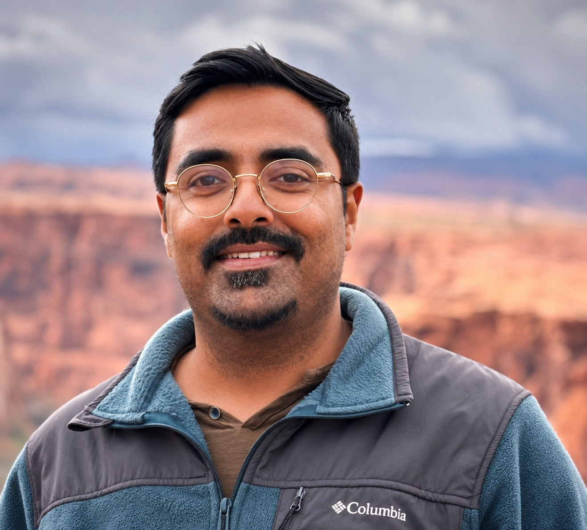

About Me
I am a Ph.D. researcher in Power Electronics at Arizona State University, working on grid-forming inverter control, fault ride-through, and reliable operation of inverter-based resources in renewable-rich power systems.
My research focuses on dispatchable virtual oscillator control, current limiting, low-voltage ride-through, and stability of grid-forming inverters under large grid disturbances. I am interested in control methods that preserve the voltage-source behavior of grid-forming converters while making them practical for real power-system faults and standards-driven operation.
I enjoy working across the full stack of power electronics research: control theory, electromagnetic transient simulation, embedded implementation, hardware testing, and experimental validation. My longer-term goal is to contribute to industry R&D in power electronics, renewable energy systems, and advanced inverter control.
Education
Researching grid-forming inverter control for renewable-rich power systems, with emphasis on dVOC-based control, LVRT/fault mitigation, IEEE 2800-oriented current limiting, and HIL testing, and experimental validation of soft-switching SiC-based inverter topologies.
 2017-2020
2017-2020
Developed a reconfigurable bus-voltage architecture for a two-stage multi-phase buck converter targeting 48 V to point-of-load data-center applications, including GaN-based hardware prototyping, transient-performance improvement, and FPGA-interface signal-conditioning hardware.
★Patent granted by Govt. of India · [PDF]
Research Motivation
As power systems move toward higher penetration of inverter-based resources, converters must do more than simply inject power. They must support the grid, remain stable during disturbances, and operate safely within hardware limits. My work is motivated by this transition: making grid-forming inverters robust enough for realistic grid events while keeping the control structure implementable on real converter platforms.